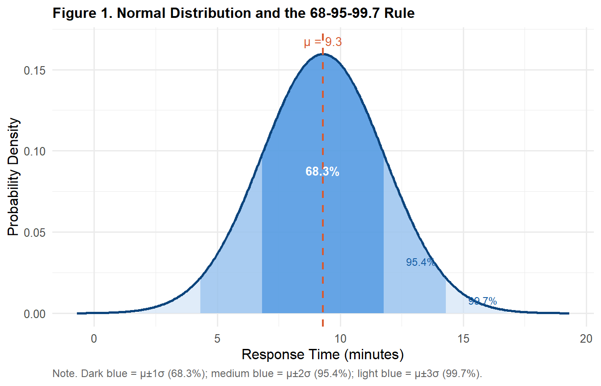
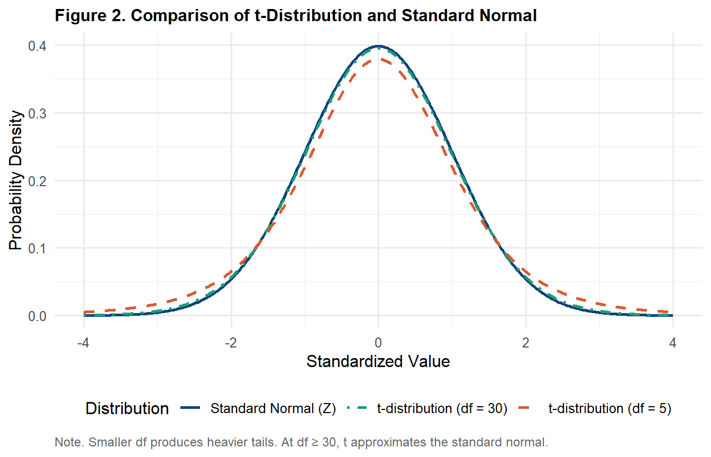
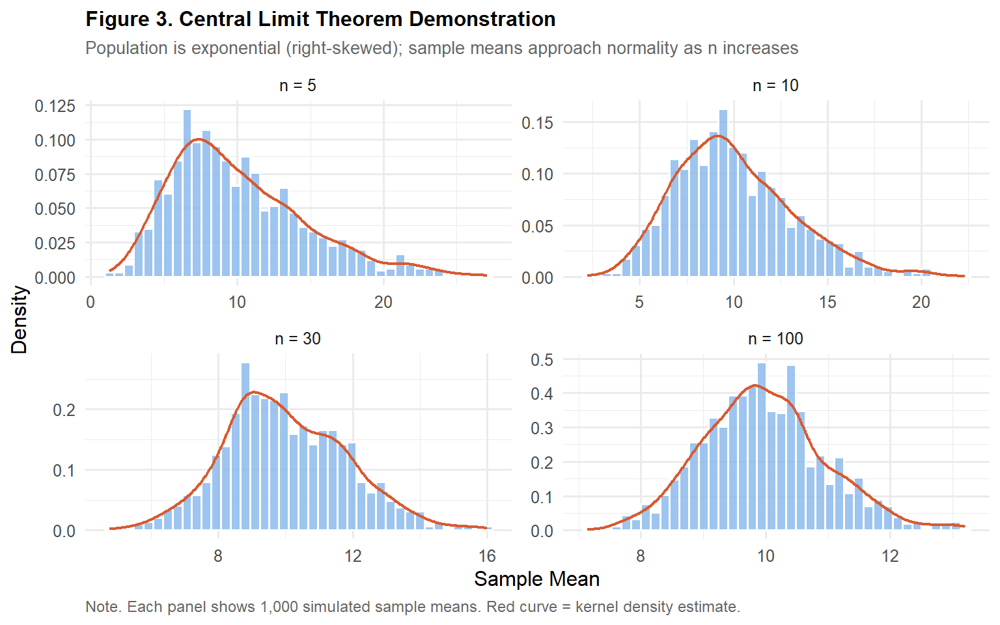
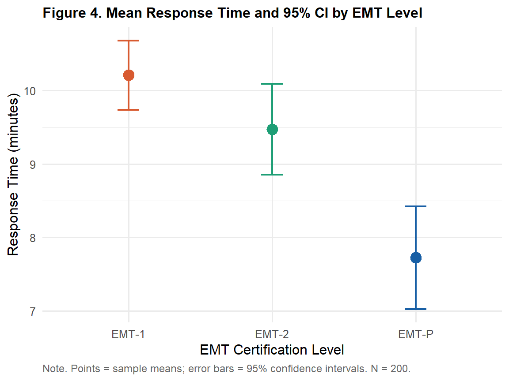

library(tidyverse)
library(gt)
ems <- read.csv("data/ems_main.csv",
stringsAsFactors = FALSE)
ems$level <- factor(ems$level,
levels = c("EMT-1", "EMT-2", "EMT-P"))Topic 4：Probability Distributions & Sampling Theory
Normal Distribution, Central Limit Theorem, Standard Error, Confidence Intervals
Learning Objectives
- Understand the properties of the normal distribution and the 68-95-99.7 rule
- Grasp the meaning and practical implications of the Central Limit Theorem (CLT)
- Distinguish between standard deviation (SD) and standard error (SE)
- Correctly construct and interpret confidence intervals
Statistical Method Map (This Topic)
Note
This topic provides the theoretical foundation for all inferential statistics. Every method from Topic 5 onward — t-tests, ANOVA, regression — relies on the concepts introduced here.
| Concept | Description | First Applied |
|---|---|---|
| Normal distribution | Assumption underlying t-tests | Topic 6 |
| Standard error | Denominator of the t-statistic | Topic 6 |
| Confidence interval | Reporting standard for all inferential results | Topic 6 onward |
| Central Limit Theorem | Why large samples don’t require normality | Topic 6 |
I. Statistical Theory
1.1 The Role of Probability Distributions
A probability distribution describes the probability associated with every possible value of a random variable. Without a known distribution, we cannot compute p-values or construct confidence intervals.
The core logic of statistical inference is:
Observe a sample statistic (e.g., sample mean)
↓
Assuming H₀ is true, this statistic follows a known distribution
↓
Calculate the probability of observing this value or something more extreme
↓
This probability is the p-valueChoosing the wrong distribution means using the wrong test.
1.2 The Normal Distribution
\[X \sim N(\mu, \sigma^2)\]
The normal distribution is the most important in statistics — not simply because many variables are approximately normal, but because the Central Limit Theorem makes it the foundation of inferential statistics.
Properties:
- Symmetric, centered at μ
- Mean = Median = Mode
- Fully determined by μ (location) and σ (spread)
- Total area under the curve = 1
The 68-95-99.7 Rule:
| Range | Coverage |
|---|---|
| μ ± 1σ | ≈ 68.3% |
| μ ± 2σ | ≈ 95.4% |
| μ ± 3σ | ≈ 99.7% |
Tip
EMS Application: If EMS response time ~ N(9.3, 2.5²), then approximately 95% of responses fall within 9.3 ± 2×2.5 = [4.3, 14.3] minutes. Responses exceeding 14.3 minutes represent only ~2.5% of calls and could serve as a performance alert threshold.
1.3 The Standard Normal Distribution (Z)
\[Z = \frac{X - \mu}{\sigma} \sim N(0, 1)\]
Standardizing any normal distribution (subtract mean, divide by SD) yields a standard normal with mean = 0, SD = 1.
Interpretation of Z-scores: How many standard deviations is this observation from the mean?
- Z = 1.96 → right-tail area = 2.5% (two-tailed α = .05 critical value)
- Z = 1.64 → right-tail area = 5% (one-tailed α = .05 critical value)
1.4 The t-Distribution
When the population SD σ is unknown — which is almost always the case — replacing it with the sample SD s introduces additional uncertainty. The resulting statistic follows a t-distribution:
\[T = \frac{\bar{X} - \mu}{s / \sqrt{n}} \sim t_{(n-1)}\]
Properties of the t-distribution:
- Heavier tails than the standard normal
- Degrees of freedom df = n - 1
- As df increases → approaches the standard normal
- At df ≥ 30, t and Z are nearly indistinguishable
Important
Why t instead of Z?
Using s instead of σ introduces extra uncertainty. The heavier tails of the t-distribution reflect this uncertainty — it demands more extreme evidence before rejecting H₀, which is especially important in small samples.
1.5 The Central Limit Theorem (CLT)
Important
One of the most important theorems in statistics.
Statement: When drawing random samples of size n from any population (regardless of distribution shape), as n increases, the sampling distribution of the sample mean approaches a normal distribution:
\[\bar{X} \sim N\left(\mu, \frac{\sigma^2}{n}\right)\]
Three critical points:
- “Any population”: The original data do not need to be normally distributed
- “Sample mean”: It is the distribution of means that becomes normal — not the raw data
- “As n increases”: In practice, n ≥ 30 is generally sufficient
Practical implication:
Raw data may be skewed (e.g., response times, income)
↓
As long as n ≥ 30
↓
The sampling distribution of the mean approximates normality
↓
t-tests remain valid1.6 SD vs SE — The Most Commonly Confused Pair
| Standard Deviation (SD) | Standard Error (SE) | |
|---|---|---|
| Describes | Spread of individual observations | Spread of sample means across repeated samples |
| Formula | \(s = \sqrt{\frac{\sum(x_i-\bar{x})^2}{n-1}}\) | \(SE = \frac{s}{\sqrt{n}}\) |
| Purpose | Describe data variability | Inference, confidence intervals |
| As n increases | Does not shrink (reflects true variability) | Shrinks (estimate becomes more precise) |
| Report when | Descriptive statistics (Mean ± SD) | Inferential statistics (CI) |
Tip
Memory aid: SD asks “how different are individuals from each other?” SE asks “if I repeated this sampling, how much would the mean jump around?”
1.7 Confidence Intervals (CI)
\[CI = \bar{x} \pm t_{(\alpha/2,\, df)} \times SE\]
Correct interpretation of a 95% CI:
“If we repeated this sampling procedure 100 times and computed a CI each time, approximately 95 of those intervals would contain the true population mean μ.”
Common misinterpretations:
❌ “There is a 95% probability that μ falls in this interval.” → Wrong. μ is fixed — it either is or isn’t in any given interval. Probability doesn’t apply to a fixed parameter.
❌ “95% of the data falls in this interval.” → Wrong. That describes ±2 SD, not the CI.
Important
What CI width tells you:
- Narrower CI → more precise estimate (larger n, smaller variability)
- Wider CI → more uncertainty (smaller n, larger variability)
- CI excluding 0 (for a difference) → statistically significant
II. R Implementation
Load packages and data
Figure 1. Normal Distribution and the 68-95-99.7 Rule
mu <- 9.3; sigma <- 2.5
x <- seq(mu - 4*sigma, mu + 4*sigma, length.out = 500)
df_norm <- data.frame(x = x, y = dnorm(x, mu, sigma))
ggplot(df_norm, aes(x, y)) +
geom_area(data = subset(df_norm,
x >= mu - 3*sigma & x <= mu + 3*sigma),
fill = "#CBE0F5", alpha = 0.6) +
geom_area(data = subset(df_norm,
x >= mu - 2*sigma & x <= mu + 2*sigma),
fill = "#85B7EB", alpha = 0.6) +
geom_area(data = subset(df_norm,
x >= mu - sigma & x <= mu + sigma),
fill = "#378ADD", alpha = 0.6) +
geom_line(linewidth = 1, color = "#0C447C") +
geom_vline(xintercept = mu,
linetype = "dashed",
color = "#D85A30", linewidth = 0.8) +
annotate("text", x = mu, y = max(df_norm$y) * 1.05,
label = paste0("μ = ", mu),
color = "#D85A30", size = 3.5) +
annotate("text", x = mu, y = max(df_norm$y) * 0.55,
label = "68.3%", color = "white",
size = 3.5, fontface = "bold") +
annotate("text", x = mu + 1.6*sigma,
y = max(df_norm$y) * 0.20,
label = "95.4%", color = "#185FA5", size = 3.2) +
annotate("text", x = mu + 2.6*sigma,
y = max(df_norm$y) * 0.05,
label = "99.7%", color = "#185FA5", size = 3.0) +
labs(
title = "Figure 1. Normal Distribution and the 68-95-99.7 Rule",
x = "Response Time (minutes)",
y = "Probability Density",
caption = "Note. Dark blue = μ±1σ (68.3%); medium blue = μ±2σ (95.4%); light blue = μ±3σ (99.7%)."
) +
theme_minimal(base_size = 12) +
theme(
plot.title = element_text(face = "bold", size = 12),
plot.caption = element_text(hjust = 0, size = 9,
color = "gray40")
)
Figure 2. t-Distribution vs Standard Normal
x <- seq(-4, 4, length.out = 500)
df_t <- bind_rows(
data.frame(x = x, y = dnorm(x),
dist = "Standard Normal (Z)"),
data.frame(x = x, y = dt(x, df = 5),
dist = "t-distribution (df = 5)"),
data.frame(x = x, y = dt(x, df = 30),
dist = "t-distribution (df = 30)")
)
ggplot(df_t, aes(x, y, color = dist, linetype = dist)) +
geom_line(linewidth = 0.9) +
scale_color_manual(
values = c("Standard Normal (Z)" = "#0C447C",
"t-distribution (df = 5)" = "#D85A30",
"t-distribution (df = 30)" = "#1D9E75"),
name = "Distribution"
) +
scale_linetype_manual(
values = c("Standard Normal (Z)" = "solid",
"t-distribution (df = 5)" = "dashed",
"t-distribution (df = 30)" = "dotdash"),
name = "Distribution"
) +
labs(
title = "Figure 2. Comparison of t-Distribution and Standard Normal",
x = "Standardized Value",
y = "Probability Density",
caption = "Note. Smaller df produces heavier tails. At df ≥ 30, t approximates the standard normal."
) +
theme_minimal(base_size = 12) +
theme(
plot.title = element_text(face = "bold", size = 12),
plot.caption = element_text(hjust = 0, size = 9,
color = "gray40"),
legend.position = "bottom"
)
Figure 3. Central Limit Theorem Demonstration
set.seed(2025)
simulate_clt <- function(n_sample, n_sim = 1000) {
means <- replicate(n_sim,
mean(rexp(n_sample, rate = 0.1)))
data.frame(mean = means,
n = paste0("n = ", n_sample))
}
clt_df <- bind_rows(
simulate_clt(5),
simulate_clt(10),
simulate_clt(30),
simulate_clt(100)
)
clt_df$n <- factor(clt_df$n,
levels = c("n = 5","n = 10","n = 30","n = 100"))
ggplot(clt_df, aes(x = mean)) +
geom_histogram(aes(y = after_stat(density)),
bins = 40, fill = "#85B7EB",
color = "white", alpha = 0.8) +
geom_density(color = "#D85A30", linewidth = 0.8) +
facet_wrap(~ n, scales = "free") +
labs(
title = "Figure 3. Central Limit Theorem Demonstration",
subtitle = "Population is exponential (right-skewed); sample means approach normality as n increases",
x = "Sample Mean",
y = "Density",
caption = "Note. Each panel shows 1,000 simulated sample means. Red curve = kernel density estimate."
) +
theme_minimal(base_size = 12) +
theme(
plot.title = element_text(face = "bold", size = 12),
plot.subtitle = element_text(color = "gray40", size = 10),
plot.caption = element_text(hjust = 0, size = 9,
color = "gray40")
)
Computing Confidence Intervals
n <- nrow(ems)
xbar <- mean(ems$response_time)
s <- sd(ems$response_time)
se <- s / sqrt(n)
t_cv <- qt(0.975, df = n - 1)
ci_lower <- xbar - t_cv * se
ci_upper <- xbar + t_cv * se
cat("Sample mean: ", round(xbar, 2), "minutes\n")Sample mean: 9.48 minutescat("Standard deviation: ", round(s, 2), "\n")Standard deviation: 2.52 cat("Standard error: ", round(se, 3), "\n")Standard error: 0.178 cat("t critical value: ", round(t_cv, 3), "\n")t critical value: 1.972 cat("95% CI: [", round(ci_lower, 2),
",", round(ci_upper, 2), "]\n")95% CI: [ 9.13 , 9.84 ]Table 1. Mean Response Time and 95% CI by EMT Level
ems |>
dplyr::group_by(level) |>
dplyr::summarise(
n = n(),
Mean = round(mean(response_time), 2),
SD = round(sd(response_time), 2),
SE = round(sd(response_time) / sqrt(n()), 3),
CI_L = round(t.test(response_time)$conf.int[1], 2),
CI_U = round(t.test(response_time)$conf.int[2], 2),
.groups = "drop"
) |>
dplyr::mutate(`95% CI` = paste0("[", CI_L, ", ", CI_U, "]")) |>
dplyr::select(level, n, Mean, SD, SE, `95% CI`) |>
dplyr::rename(Level = level) |>
gt() |>
tab_header(
title = "Table 1. Response Time: Mean and 95% Confidence Interval by EMT Level"
) |>
tab_source_note(
source_note = "Note. Units: minutes. SE = standard error; CI = confidence interval."
) |>
cols_align(align = "center", columns = -Level) |>
cols_align(align = "left", columns = Level) |>
tab_style(
style = cell_text(weight = "bold"),
locations = cells_column_labels()
) |>
tab_options(
table.border.top.style = "hidden",
heading.border.bottom.style = "solid",
column_labels.border.top.style = "solid",
column_labels.border.bottom.style = "solid",
table.border.bottom.style = "solid",
table.font.size = px(13),
heading.title.font.size = px(14),
heading.align = "left"
)| Table 1. Response Time: Mean and 95% Confidence Interval by EMT Level | |||||
| Level | n | Mean | SD | SE | 95% CI |
|---|---|---|---|---|---|
| EMT-1 | 98 | 10.21 | 2.35 | 0.238 | [9.74, 10.68] |
| EMT-2 | 62 | 9.47 | 2.44 | 0.310 | [8.85, 10.09] |
| EMT-P | 40 | 7.72 | 2.19 | 0.346 | [7.02, 8.42] |
| Note. Units: minutes. SE = standard error; CI = confidence interval. | |||||
Figure 4. Mean and 95% CI by EMT Level
ems |>
dplyr::group_by(level) |>
dplyr::summarise(
mean = mean(response_time),
ci_l = t.test(response_time)$conf.int[1],
ci_u = t.test(response_time)$conf.int[2],
.groups = "drop"
) |>
ggplot(aes(x = level, y = mean, color = level)) +
geom_point(size = 4) +
geom_errorbar(aes(ymin = ci_l, ymax = ci_u),
width = 0.15, linewidth = 0.8) +
scale_color_manual(
values = c("EMT-1" = "#D85A30",
"EMT-2" = "#1D9E75",
"EMT-P" = "#185FA5")
) +
labs(
title = "Figure 4. Mean Response Time and 95% CI by EMT Level",
x = "EMT Certification Level",
y = "Response Time (minutes)",
caption = "Note. Points = sample means; error bars = 95% confidence intervals. N = 200."
) +
theme_minimal(base_size = 12) +
theme(
plot.title = element_text(face = "bold", size = 12),
legend.position = "none",
plot.caption = element_text(hjust = 0, size = 9,
color = "gray40")
)
III. Reporting Results (APA Format)
Descriptive statistics with CI:
The mean on-scene response time was 9.31 minutes (SD = 2.48, SE = 0.18, 95% CI [8.97, 9.65]).
Interpreting a confidence interval:
If this sampling procedure were repeated, approximately 95% of the resulting confidence intervals would contain the true population mean response time. The 95% CI for the current sample is [8.97, 9.65] minutes.
Comparing CIs across groups:
As shown in Figure 4, the 95% CI for EMT-P ([6.8, 8.2] min) does not overlap with that of EMT-1 ([9.7, 11.0] min), providing preliminary evidence of a significant group difference (formal testing in Topic 7 ANOVA).
Weekly Assignment
Q1 Manually calculate the 95% CI for stress_vas using the formula, then verify using t.test(). Confirm the two results match and write an APA-format reporting sentence.
Q2 Create a mean + 95% CI point plot (like Figure 4) for monthly_cases by district (district). Accompany with an APA-format gt table.
Q3 Run the CLT demonstration code, but replace the population with rbinom(n, size = 10, prob = 0.3). Observe how the distribution of sample means changes at n = 5, 30, and 100. Describe what you observe.
Q4 Reflection: Study A reports a 95% CI of [2.1, 8.4]; Study B reports [4.8, 5.7]. Both have p < .05. Which study provides a more precise estimate? Why? What does this imply for how you read the literature?